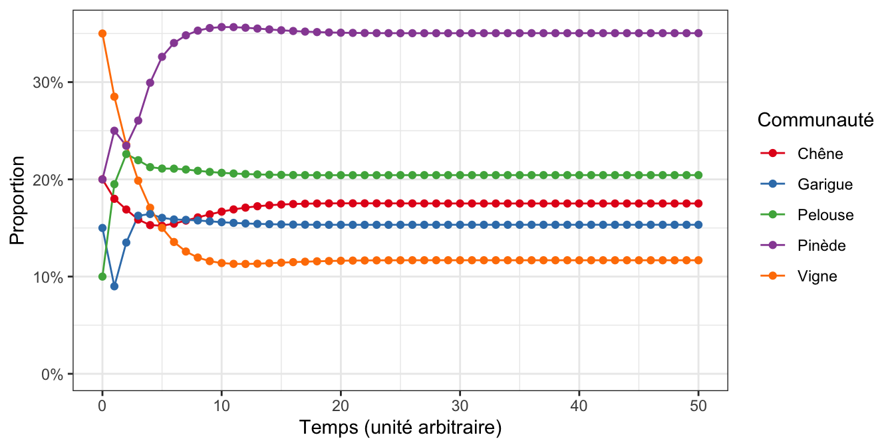

library(tidyverse)
library(scales)6.1 Pré-requis
Comme pour chaque nouveau chapitre, je vous conseille de travailler dans un nouveau script que vous placerez dans votre répertoire de travail, et dans une nouvelle session de travail (Menu Session > Restart R). Inutile en revanche de créer un nouveau Rproject : vous pouvez tout à fait avoir plusieurs script dans le même répertoire de travail et pour un même Rproject. Comme toujours, consultez le livre en ligne du semestre 3 si vous ne savez plus comment faire.
Si vous êtes dans une nouvelle session de travail (ou que vous avez quitté puis relancé RStudio), vous devrez penser à recharger en mémoire les packages utiles. Dans ce chapitre, vous aurez uniquement besoin des packages du tidyverse (Wickham 2023), en particulier les package dplyr (Wickham et al. 2023), pour manipuler des tableaux, et ggplot2 (Wickham et al. 2024) pour les représentations graphiques. Vous pourrez aussi avoir besoin du package scales (Wickham, Pedersen, et Seidel 2023) pour améliorer la mise en forme des axes des graphiques produits
Nous n’aurons pas besoin ici d’importer de données depuis des fichiers externes : nous allons en effet générer directement des données à partir d’une chaîne de Markov.
Comme toujours, je spécifie une fois pour toutes le thème que j’utiliserai pour tous les graphiques de ce chapitre. Libre à vous de choisir un thème différent ou de vous contenter du thème proposé par défaut :
theme_set(theme_bw())6.2 Les matrices dans R
Lors de votre découverte du logiciel R, de son fonctionnement et de sa syntaxe, vous avez appris qu’il existe plusieurs types d’objets que l’on peut créer et manipuler : des vecteurs, des facteurs, des data.frames ou tibbles, des listes, etc. L’un des types d’objets que nous n’avons pas encore décrit est la matrice.
Dans R, une matrice est un tableau dans lequel chaque cellule contient des éléments du même type. Contrairement aux data.frames et aux tibbles, une matrice ne peut donc pas avoir des chiffres dans une colonne, et des chaînes de caractères ou des vrais-faux dans une autre. De ce point de vue, une matrice est donc similaire à un vecteur qui ne peut contenir que des éléments qui sont tous du même type. Mais comme un data.frame ou un tibble, et contrairement à un vecteur, une matrice possède des dimensions : un nombre de lignes et un nombre de colonnes.
Les matrices sont donc des objets qui possèdent des points communs et des différences, avec les vecteurs et avec les data.frames ou tibbles.
6.2.1 Création
La façon la plus simple de créer une matrice est d’utiliser la fonction matrix(). Cette fonction possède de nombreux arguments et vous devrez au moins renseigner les suivants :
data: quelles données souhaitez vous placer dans la matrice. Il peut s’agir d’une unique valeur si vous souhaitez que toutes les cellules de la matrice contiennent la même chose. En général, il s’agit d’un vecteur contenant les éléments que l’on souhaite placer dans la matrice.nrow: combien de lignes la matrice que vous souhaitez créer devra-t-elle contenir ?ncol: combien de colonnes la matrice que vous souhaitez créer devra-t-elle contenir ?byrow: souhaitez-vous que les données fournies dansdatasoient remplies en lignes (byrow = TRUE) ou en colonnes (byrow = FALSE, c’est le choix par défaut) dans la matrice ?
En général, on renseigne donc systématiquement data, et soit nrow, soit ncol. Il n’est pas nécessaire de renseigner à la fois nrow et ncol puisque R est capable de déterminer l’un des deux automatiquement selon la taille du vecteur que vous avez fourni à data. Par exemple, si vous fournissez un vecteur de 15 éléments à data, et que vous indiquez nrow = 3, R produira automatiquement une matrice de 3 lignes et 5 colonnes. Cela suppose évidemment que la longueur du vecteur fourni soit compatible avec les dimensions de la matrice que vous envisagez.
Vous pouvez évidemment spécifier explicitement le nombre de lignes et le nombre de colonnes souhaitées, mais alors la longueur du vecteur fourni devra être parfaitement compatible avec les dimensions de la matrice envisagée. Par exemple, si vous souhaitez une matrice de 4 lignes et 4 colonnes (soit 16 cellules), vous devrez fournir exactement 16 valeurs dans le vecteur transmis à l’argument data. Si vous en fournissez plus ou moins, des choses inattendues peuvent se produire :
- si vous fournissez trop de valeurs, les valeurs en trop ne seront pas intégrées à la matrice, votre vecteur sera donc tronqué après la seizième valeur
- si vous fournissez trop peu de valeurs, le recyclage sera utilisé pour combler la matrice qui ne peut pas avoir de cellule vide : les première valeurs du vecteur seront réutilisées jusqu’à ce que la matrice soit remplie, et un message d’avertissement vous sera renvoyé.
Voici quelques exemples :
# Création d'un vecteur de 8 éléments
a <- c(1, 5, 6, 9, 10, 5, 4, 2) # 8 éléments
# Création d'une matrice de 2 lignes et 4 colonnes
matrix(data = a, nrow = 2) [,1] [,2] [,3] [,4]
[1,] 1 6 10 4
[2,] 5 9 5 2# Une autre façon de créer la même matrice
matrix(data = a, ncol = 4) [,1] [,2] [,3] [,4]
[1,] 1 6 10 4
[2,] 5 9 5 2Si la longueur du vecteur contenant les données n’est pas compatible avec les dimensions voulues pour la matrice, il faut spécifier les nombres de lignes et de colonnes de façon explicite, et un message d’avertissement est renvoyé.
# Pour créer une matrice de 3 lignes et 4 colonnes, il faut spécifier
# explicitement nrow et ncol
matrix(data = a, nrow = 3, ncol = 4)Warning in matrix(data = a, nrow = 3, ncol = 4): la longueur des données [8]
n'est pas un diviseur ni un multiple du nombre de lignes [3] [,1] [,2] [,3] [,4]
[1,] 1 9 4 5
[2,] 5 10 2 6
[3,] 6 5 1 9Ici, les premières valeurs du vecteur a ont été recyclées (1, 5, 6 et 9) pour remplir toutes les cellules de la matrice.
Dans tous les exemples ci-dessus, les chiffres contenus dans le vecteur a ont été remplis en colonnes dans la matrice. Pour remplir la matrice en lignes, on indique byrow = TRUE :
matrix(data = a, nrow = 2, byrow = TRUE) [,1] [,2] [,3] [,4]
[1,] 1 5 6 9
[2,] 10 5 4 2matrix(data = a, ncol = 4, byrow = TRUE) [,1] [,2] [,3] [,4]
[1,] 1 5 6 9
[2,] 10 5 4 2matrix(data = a, nrow = 3, ncol = 4, byrow = TRUE)Warning in matrix(data = a, nrow = 3, ncol = 4, byrow = TRUE): la longueur des
données [8] n'est pas un diviseur ni un multiple du nombre de lignes [3] [,1] [,2] [,3] [,4]
[1,] 1 5 6 9
[2,] 10 5 4 2
[3,] 1 5 6 9Et bien sûr, comme vous le savez maintenant, si vous souhaitez pouvoir réutiliser les matrices créées avec la fonction matrix(), vous devez leur donner un nom avec l’oérateur <- :
mat <- matrix(data = a, nrow = 3, ncol = 4, byrow = TRUE)Warning in matrix(data = a, nrow = 3, ncol = 4, byrow = TRUE): la longueur des
données [8] n'est pas un diviseur ni un multiple du nombre de lignes [3]mat [,1] [,2] [,3] [,4]
[1,] 1 5 6 9
[2,] 10 5 4 2
[3,] 1 5 6 96.2.2 Produit matriciel
Le produit matriciel est l’opération qui permet de multiplier 2 matrices entre elles, ou de multiplier une matrice par un vecteur. Comme nous l’avons vu en cours, les dimension des objets que l’on multiplie sont importantes.
Produit matriciel
Si \(A\) et \(B\) sont deux matrices, le produit matriciel \(A\times B\) n’est possible que si le nombre de colonnes de \(A\) est égal au nombre de lignes de \(B\).
Par ailleurs, sauf cas particulier, \(A\times B \neq B\times A\)
Dans R, l’opérateur qui permet d’effectuer un produit matriciel est %*%.
# Création d'une matrice A
A <- matrix(1:15, nrow = 5)
A [,1] [,2] [,3]
[1,] 1 6 11
[2,] 2 7 12
[3,] 3 8 13
[4,] 4 9 14
[5,] 5 10 15dim(A)[1] 5 3# Création d'une matrice B
B <- matrix(1:15, ncol = 5)
B [,1] [,2] [,3] [,4] [,5]
[1,] 1 4 7 10 13
[2,] 2 5 8 11 14
[3,] 3 6 9 12 15dim(B)[1] 3 5# Produit matriciel A * B
A %*% B [,1] [,2] [,3] [,4] [,5]
[1,] 46 100 154 208 262
[2,] 52 115 178 241 304
[3,] 58 130 202 274 346
[4,] 64 145 226 307 388
[5,] 70 160 250 340 430# Produit matriciel B * A
B %*% A [,1] [,2] [,3]
[1,] 135 310 485
[2,] 150 350 550
[3,] 165 390 615Vous constatez ici que les dimensions de la matrice obtenue sont variables et dépendent du sens du produit matriciel et des dimensions des matrices multipliées. Multiplier 2 matrices dont les dimensions sont incompatibles fait apparaître un message d’erreur :
# Création d'une matrice C (4 lignes et 3 colonnes)
C <- matrix(1:12, ncol = 3)
C [,1] [,2] [,3]
[1,] 1 5 9
[2,] 2 6 10
[3,] 3 7 11
[4,] 4 8 12# Affichage de la matrice A (5 lignes et 3 colonnes)
A [,1] [,2] [,3]
[1,] 1 6 11
[2,] 2 7 12
[3,] 3 8 13
[4,] 4 9 14
[5,] 5 10 15# Calcul des produits matriciels : impossibles !
A %*% CError in A %*% C: arguments inadéquatsC %*% AError in C %*% A: arguments inadéquatsEnfin, il est tout à fait possible d’effectuer un produit matriciel entre une vecteur et une matrice. Dans R, les vecteurs n’ont pas de dimension, mais ils ont une longueur (i.e. un nombre d’éléments), que l’on peut afficher avec la fonction length(). Lorsque l’on effectue un produit matriciel impliquant un vecteur, le vecteur est automatiquement transformé soit en vecteur ligne (une matrice d’une seule ligne) soit en vecteur colonne (une matrice d’une seule colonne, voir le cours de “Fonctionnement des écosystèmes”) :
- Si les vecteur est à gauche (
vec %*% mat), il est transformé en vecteur ligne. Pour que le produit matriciel puisse être calculé, il faut alors que le nombre d’éléments devecsoit égal au nombre de lignes demat. - Si les vecteur est à droite (
mat %*% vec), il est transformé en vecteur colonne. Pour que le produit matriciel puisse être calculé, il faut alors que le nombre d’éléments devecsoit égal au nombre de colonnes demat.
# Création d'un vecteur
vec <- c(2, 4, 3)
vec[1] 2 4 3# Création d'une matrice D : 3 lignes et 2 colonnes
D <- matrix(c(5, 6, 8, 4, 2, 3), nrow = 3)
D [,1] [,2]
[1,] 5 4
[2,] 6 2
[3,] 8 3# Création d'une matrice E : 2 lignes et 3 colonnes
E <- matrix(c(1, 2, 3, 9, 8, 7), nrow = 2)
E [,1] [,2] [,3]
[1,] 1 3 8
[2,] 2 9 7# Calcul de différents produits matriciels
vec %*% D [,1] [,2]
[1,] 58 25D %*% vecError in D %*% vec: arguments inadéquatsE %*% vec [,1]
[1,] 38
[2,] 61vec %*% EError in vec %*% E: arguments inadéquatsLà encore, les dimensions de la matrice obtenue à l’issue du produit matriciel dépendent des dimensions des objets multipliés et de l’ordre de la multiplication.
6.3 Simulation d’écosystème
Nous avons vu dans le cours magistral de “Fonctionnement des écosystème” qu’il était possible de simuler l’évolution de plusieurs types de communautés végétales en utilisant une chaîne de Markov très simple. Il nous faut pour cela 2 objets :
- une matrice de transition \(P\) : il s’agit d’une matrice carrée qui se lit en lignes (la somme de chaque ligne vaut 1) et qui contient les probabilités de transition d’un type de communauté végétale à un autre entre 2 observations successives de l’écosystème étudié (tous ses coefficients sont donc soit nuls, soit strictement positifs et inférieurs à 1).
- un vecteur \(\pi_0\) qui contient les proportions de chaque type d’écosystème au temps zéro (il s’agit donc des conditions initiales)
Pour connaître la situation de l’écosystème au temps 1 (\(\pi1\)), il suffit d’effectuer un produit matriciel :
\[ \pi_1 = \pi_0 \times P\]
Pour connaître la situation de l’écosystème au temps 2 (\(\pi_2\)), il suffit d’effectuer un produit matriciel :
\[ \pi_2 = \pi_1 \times P = \pi_0 \times P \times P\] Pour connaitre la situation de l’écosystème au temps \(t\) (\(\pi_t\)), il suffit d’effectuer un produit matriciel :
\[ \pi_t = \pi_{t-1} \times P = \pi_0 \times P^t\]
En utilisant ce que vous venez d’apprendre sur les matrices d’une part (création et produits matriciels) et ce que vous avez appris sur les boucles for dans la Section 5.3, simulez l’évolution de l’écosystème décrit en cours. Vous prendrez soin de respecter l’ordre des étapes suivant :
- Création de la matrice de transition
P - Création du vecteur des conditions initiales
pi0 - Réglage de la durée de simulation à 50 pas de temps
- Création d’une matrice remplie de 0 qui accueillera les résultats des calculs pour chaque étape de simulation
- Placer
pi0sur la première ligne de la matrice - Calcul des 50 produits matriciels à l’aide d’une boucle
for - Transformation de la matrice de résultat en tibble grâce à la fonction
as_tibble(). Attention, n’oubliez pas d’ajouter une colonneTempspour indiquer le numéro des étapes de simulation (de 0 à 50) - Transformation du tibble au format long avec
pivot_longer() - Représentation graphique des résultats obtenus avec
ggplot().
Pour mémoire, voilà les données utilisées dans le cours pour simuler l’écosystème méditerranéen d’intérêt et ses 5 communautés végétales.
Conditions initiales
pi0:pi0Chêne Vigne Pelouse Garigue Pinède 0.20 0.35 0.10 0.15 0.20Matrice de transition
P:PChêne Vigne Pelouse Garigue Pinède Chêne 0.8 0.2 0.00 0.0 0.00 Vigne 0.0 0.7 0.30 0.0 0.00 Pelouse 0.0 0.0 0.40 0.6 0.00 Garigue 0.0 0.0 0.00 0.2 0.80 Pinède 0.1 0.0 0.25 0.0 0.65
Le graphique que vous devriez être en mesure de produire est le suivant :

Pour comprendre ce système…
- Essayez de modifier les conditions initiales en choisissant d’autres valeurs pour
pi0. Attention, tous les coefficients représentent des proportions. Ils doivent donc obligatoirement être compris entre 0 et 1 et leur somme doit faire 1. - Que se passe-t-il si les forêts de chênes occupent 100% de l’écosystème au temps 0 ? Est-ce que la situation d’équilibre est modifiée ? Cela vous semble-t-il logique ? Essayez de l’expliquer en revenant au cours et en examinant les conditions requises pour qu’un équilibre stable apparaisse. Est-ce que cela dépend de \(\pi_0\) ?
- Reprenez les valeurs de départ pour
pi0, mais changez maintenant les probabilités de transition de la matriceP. Attention, là encore, tous les coefficients doivent être compris entre 0 et 1 et la somme de chaque ligne doit faire exactement 1 (\(P\) est une matrice stochastique). - Est-ce que l’état d’équilibre est modifié ? Est-ce logique ?
- En tant que gestionnaire de l’environnement, votre objectif est maintenant d’arriver à une situation où les forêts de chênes sont plus abondantes que les pinèdes dans cet écosystème. Quels sont vos leviers d’action ? Pouvez vous trouver des coefficients pour
Pqui reflètent ces changements ? À l’équilibre, cela se traduit-il par une dominance des forêts de chênes ?